自从上次看了程序员写代码的过程，我才发现手机拍照这事真的挺简单，而且也是有法可依的，但一定建立在审美的基础上。毕竟艺术无贵贱，审美却有高低——这就像快手随手拍的几十秒的土味视频，拥有远超过一部精心制作的艺术短片的播放量，这就说明大部分人的审美和趣味点真的有待提高。
而，拍摄技巧相对对于手机摄影，甚至摄影来说，真的太微不足道了，真正需要进步和提升的审美和所谓的瓶颈期。有点跑题，我们接着说一下手机摄影技巧。
手机相机隐藏的功能：连拍，手动测光，对焦锁定在拍摄中都是很实用的。但是，这些小技巧并没有被大家发现。
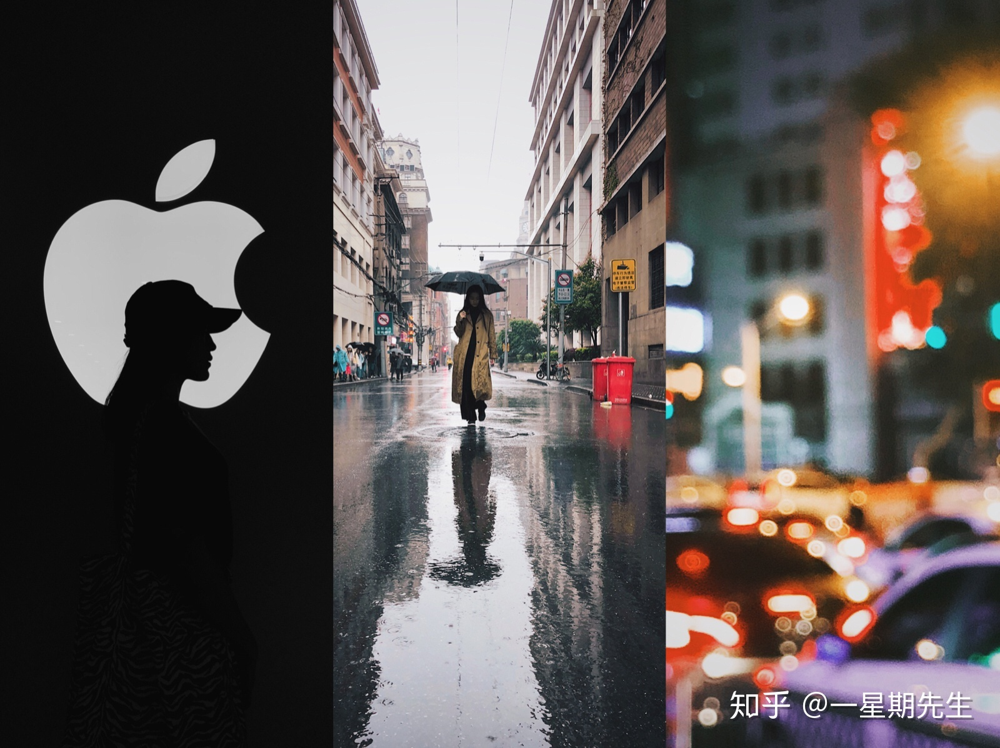
很多人会觉得，手机拍照的场景很重要，当然这个无可厚非。就好比你拿着手机在西藏随便拍几张都可以做手机壁纸，但是你拿着相机在广场拍跳广场舞的大妈，那肯定前者更容易出大片。
先来看一组我之前拍摄的时候场景和最终效果图的对比
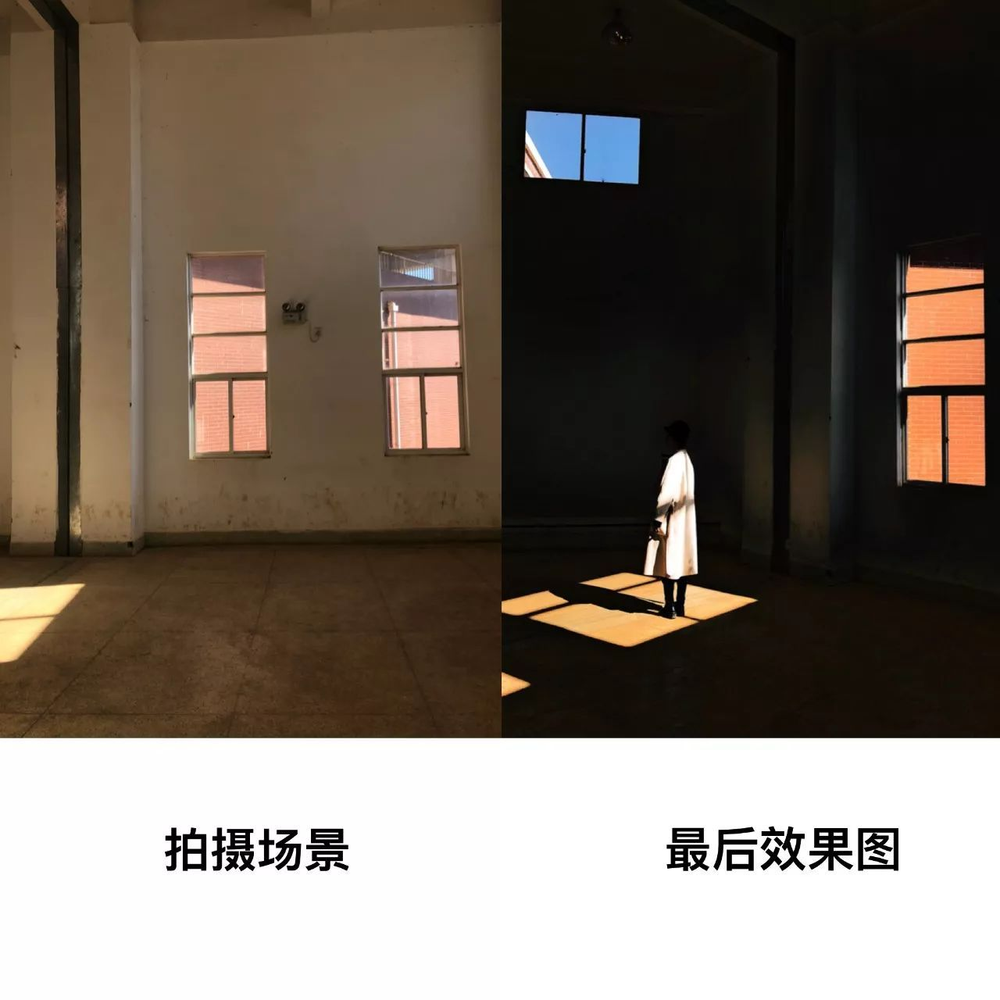
以上图为例，我为什么选择这个场景拍摄？
1.画面中有色彩的对比，窗户外面的红砖和蓝天为画面提供了色彩基调；
2.窗户映射在地面的光影是画面点睛之笔；
3.后面的白墙为画面提供简洁的背景；
4.旁边正好有两个妹子，为相片提供位置可变动的主体（这个是重点）。
所以，留心观察你身边的场景，说不定很多不起眼的地方就可以拍出很好看的相片。
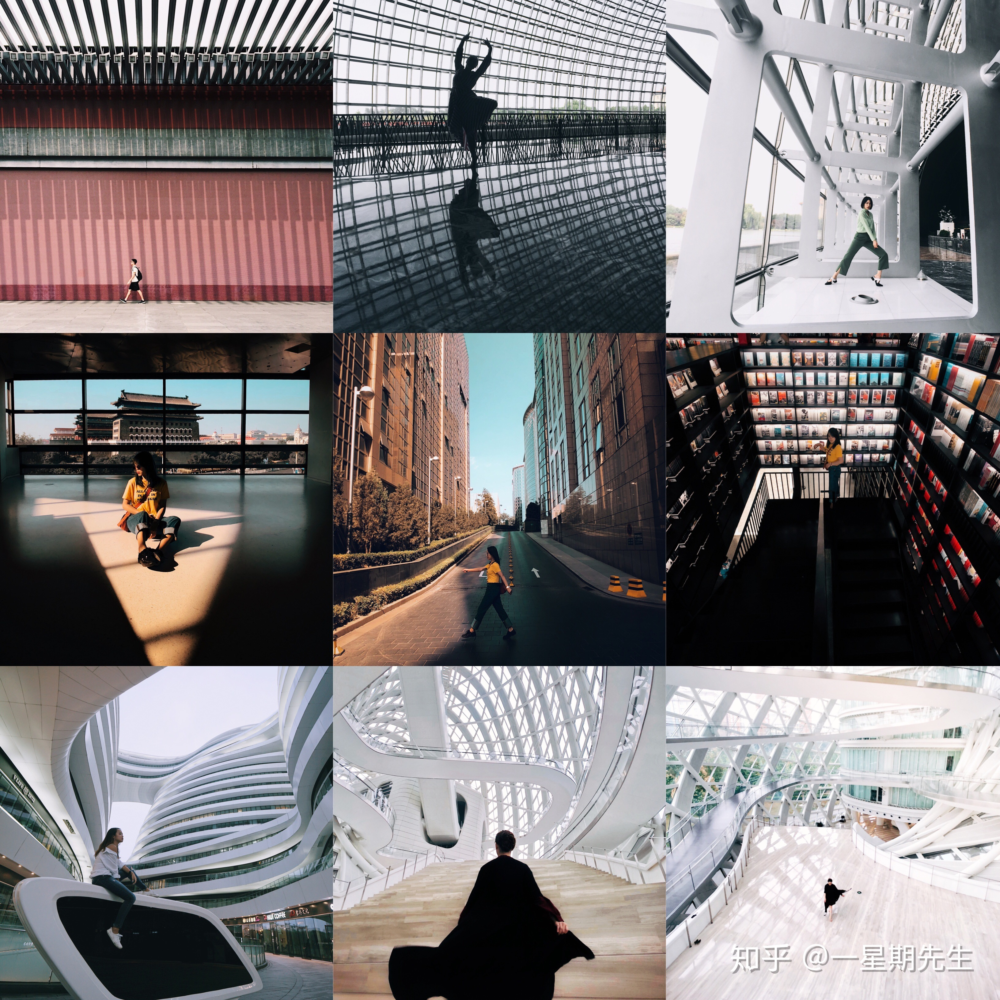
刚开始拿起手机拍摄的人群，与其学习构图技巧，不如让相片保证以下几点：
1.保证画面的横平竖直
2.尽可能的保持画面的简洁
3.突出拍摄的主体
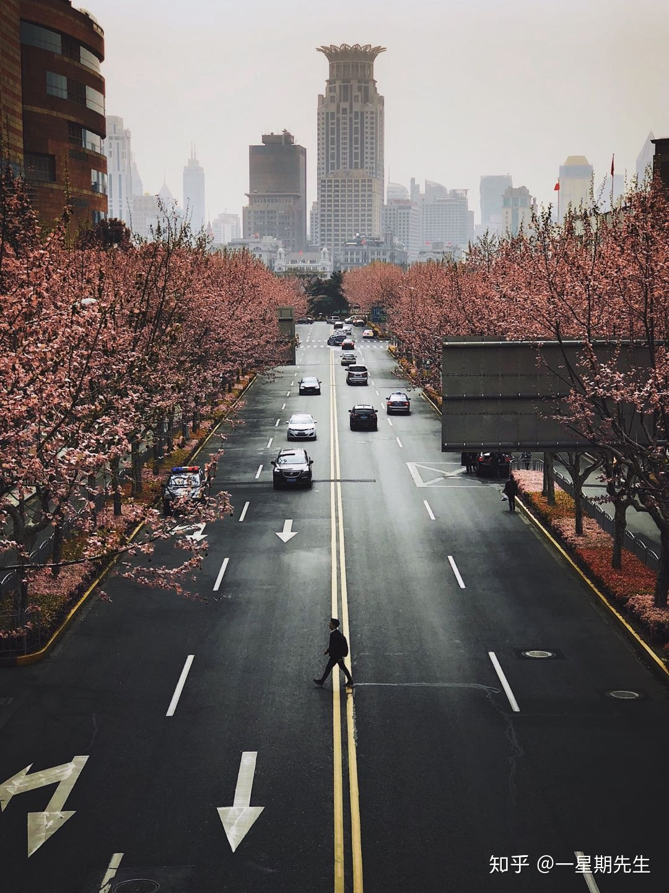
构图技法不是简单的套用，而是了解背后的逻辑。如果你在拍摄一些转瞬即逝的画面，首先应该想的是先拍到，然后再想着怎么突出主体。
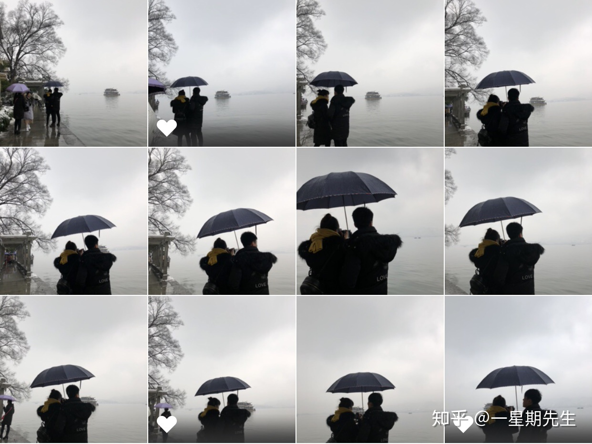
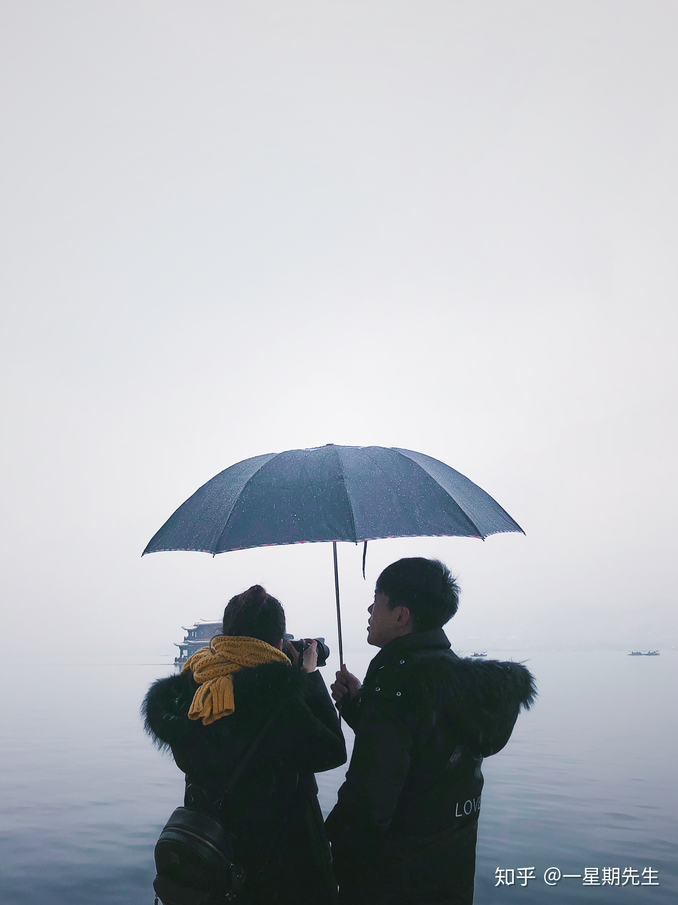
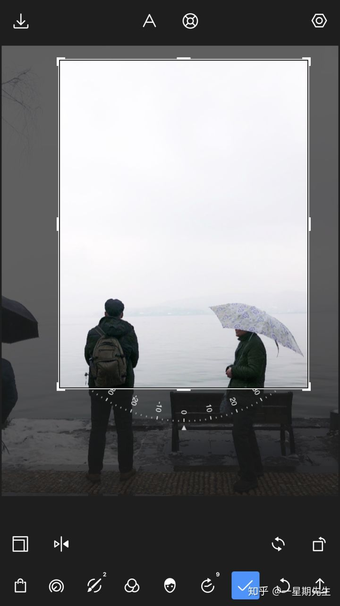
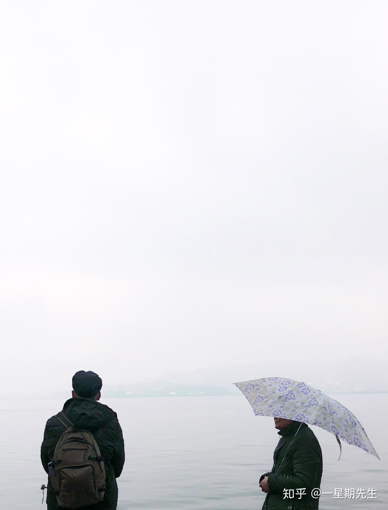
手机修图不仅仅是加个滤镜，只加滤镜的相片是没有灵魂的（逃...........)
如果可以的话，尽量选择自己调色，这会让你的色感更强
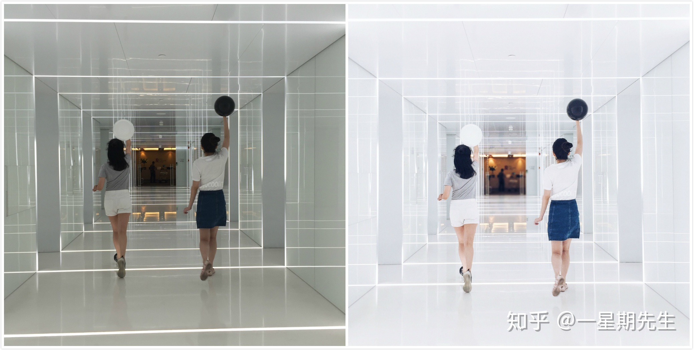
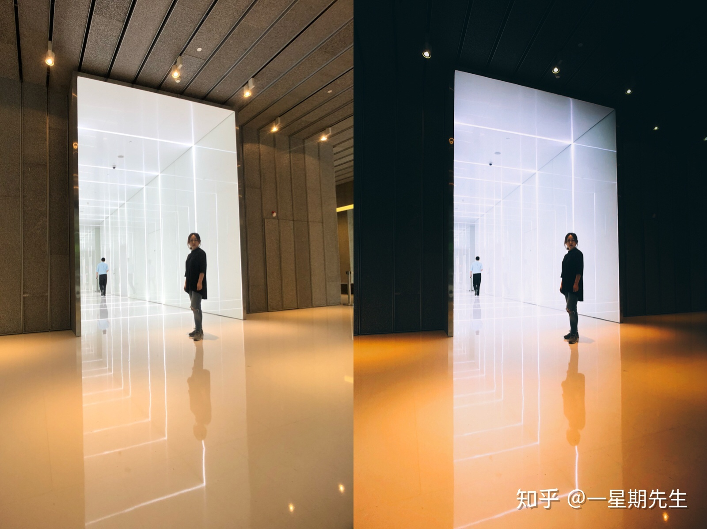
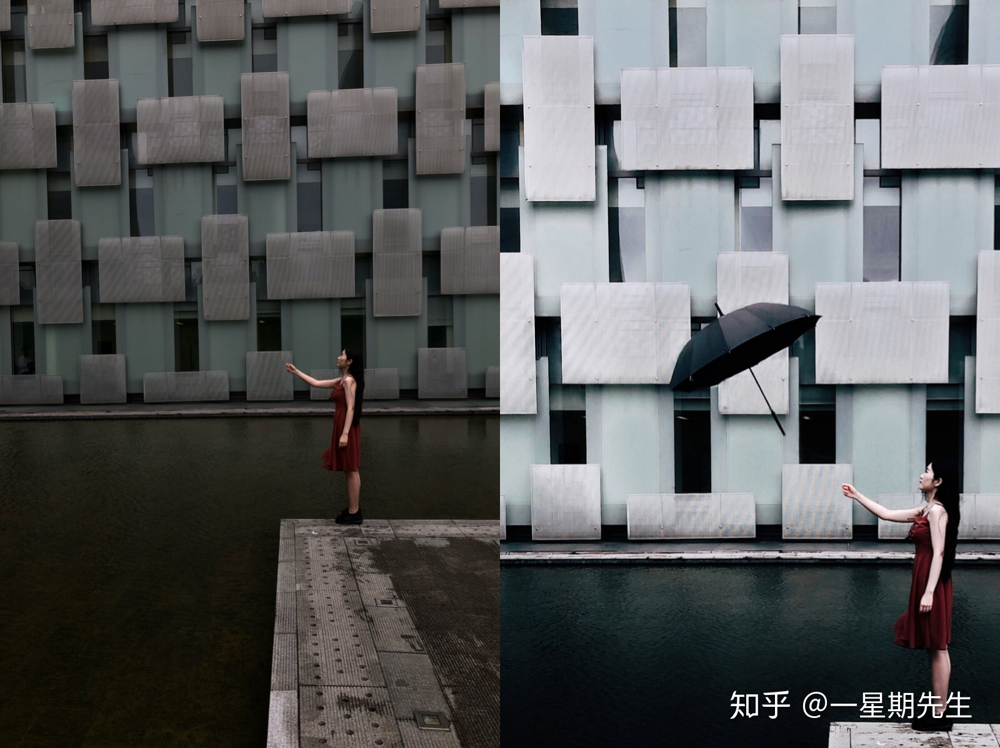
1.手机的优势就是：它是离你最近的记录设备，拍摄想法很重要。还有，别老想着和相机一较高下，意义不大。
2.技巧其实很简单，很多时候制约很多人变强的其实并不是摄影技巧，很可能是审美。所以，不要顾着拍，看好片也是一种进步的方式。
50人觉得很赞！